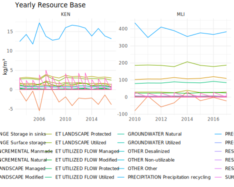
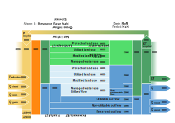
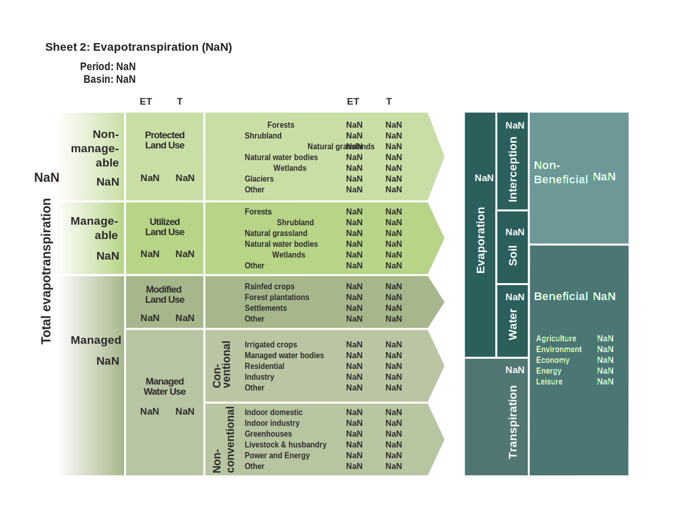
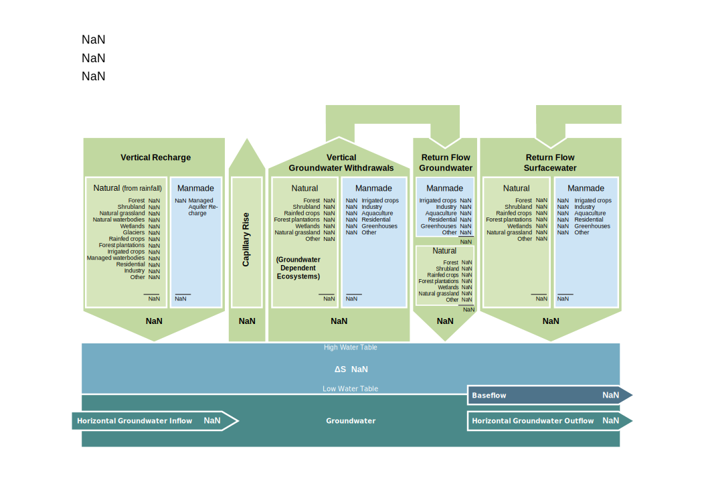
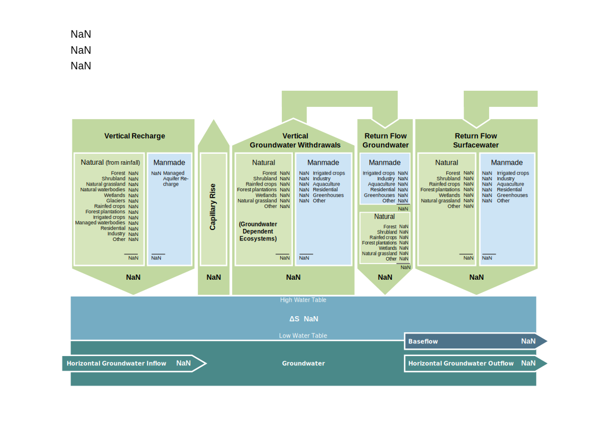

Show code
library(rmarkdown)
library(jsonlite)
library(ggplot2)
library(scales)
library(stringr)
library(data.table)
library(r2d3)
library(crosstalk)
# IMWI color palette
tmp <- fread("../../_assets/IWMI.gpl", skip=4, header=F)
pal <- grDevices::rgb(tmp[, .(V1, V2, V3)], maxColorValue=255)
names(pal) <- tmp[, V4]
saveRDS(pal, "../../_assets/pal_iwmi.rds")
# Default plot theme
options(ggplot2.discrete.color=pal)
theme_mb <- function(
base_size = 8,
base_family = "Roboto Condensed",
base_fill = pal["light"], ...) theme_minimal(base_size, base_family) +
theme(
panel.background = element_rect(fill=base_fill, color=NA),
plot.background = element_rect(fill="transparent", color=NA),
panel.grid = element_line(color="white"),
legend.box.background = element_rect(fill="transparent", color=NA),
text = element_text(color=pal["black"], lineheight=.8),
strip.text = element_text(face="bold", hjust=0, size=base_size),
legend.position = "top",
legend.justification = c("right", "top"),
legend.key.height = unit(.8, "line")
) + theme(...)
This notebook is to explore multiple visualization schemes for hydrologic model simulations. It’s broken down into 3 parts:
- Interactive SVG (this page): add user interactivity to existing SVG sheets (or simplified) designs using low-level D3.js library
- Flow diagrams: reshape WA+ model output to create interactive Sankey diagrams with Highcharts.js
- Interactive 3D timelapse of river basins: create a 3D map of basin landscape with SVG annotation layers (arrows, etc.)
The D3.js approach is the more flexible but also the more “tedious” to implement. Other approaches will be developed in separate notebooks.
Data Preparation
To validate the different approaches we use sample output datasets provided by Naga Valpuri (IWMI) for Mali (Niger river basin) and Kenya (Mara river basin). All hydrologic models are written in Python and version controlled to GitHub (e.g. Mali notebooks).
Show code
data <- list(
ken = "~/Projects/2021-iwmi/data/ken/hydroloop_results/csv",
mli = "~/Projects/2021-iwmi/data/mli/csv_km3"
) %>%
lapply(list.files, pattern="*.csv", recursive=TRUE, full.names=TRUE) %>%
lapply(data.table) %>%
rbindlist(idcol="iso3", use.names=TRUE, fill=TRUE) %>%
setnames("V1", "path")
data[,
file := basename(path)
][, `:=`(
year = str_extract(file, "_[0-9]{4}") %>% str_sub(2,5) %>% as.integer(),
month = str_extract(file, "[0-9]{4}_[0-9]{1,2}") %>% str_sub(6,7) %>% as.integer(),
sheet = str_extract(tolower(file), "sheet[0-9]{1}")
)] %>% setorder(iso3, year, month, na.last=TRUE)
data[iso3=="ken", .(iso3, file, sheet, year, month)] %>%
paged_table()
Show code
data[iso3=="mli", .(iso3, file, sheet, year, month)] %>%
paged_table()
In particular we have yearly model steps for Mali and monthly steps for Kenya that are further aggregated to yearly time spans (by variable), as well as monthly time-series. In Mali only Sheet 1 was produced (Resource Base), but the Kenya analysis includes output variables for all 6 hydro sheets.
Let’s load a sample model output for Kenya for the year 2017.
Show code
f <- "sheet1_2017.csv"
ken <- data[iso3=="ken" & file==f][1, fread(path)]
ken %>% paged_table()
This file lists 34 output variables grouped into CLASS and SUBCLASS. Units are in km³/year. This categorical data can be represented in a Sankey diagram but not very useful as-is (see next section for more work on this).
Show code
library(ggalluvial)
ggplot(ken,
aes(axis1=CLASS, axis2=abbreviate(SUBCLASS), axis3=abbreviate(VARIABLE), y=VALUE)) +
geom_alluvium(aes(fill=CLASS), width=1/4, alpha=.7, color="white") +
geom_stratum(width=1/4) +
geom_text(stat="stratum", aes(label=after_stat(stratum)), angle=90, size=2.2) +
scale_x_discrete(limits=c("class", "subclass", "variable")) +
labs(y=NULL, fill=NULL) +
scale_fill_manual(values=unname(pal)) +
theme_mb(
panel.grid=element_blank(),
axis.text=element_text(face="bold"))

And monthly time-series of Incremental ET by land-use classes:
Show code
f <- "sheet1_basin_etincr_monthly.csv"
ken.ts <- data[iso3=="ken" & file==f][1, fread(path)]
ken.ts %>% paged_table()
We’ll gather all the yearly budgets for now into a long table, and simply visualize the time-series.
Show code
f <- data[sheet=="sheet1" & is.na(month) & !is.na(year)]
data <- lapply(1:nrow(f), function(x)
fread(f[x, path])[, `:=`(
iso3 = f[x, iso3],
sheet = f[x, sheet],
year = f[x, year]
)]) %>% rbindlist()
fwrite(data, "data.csv")
ggplot(data[VALUE>0 & SUBCLASS %like% "ET"],
aes(year, VALUE, color=paste(SUBCLASS, VARIABLE, sep=" "))) +
geom_line(size=1) +
facet_wrap(~toupper(iso3), scales="free") +
labs(x=NULL, y=NULL, title="Yearly ET Budgets (kg/m³)", color=NULL) +
scale_color_manual(values=unname(pal)) +
guides(color=guide_legend(ncol=3)) +
theme_mb()

We pass this yearly dataset to the client (web browser) as a JSON array named data. We also pass a default color palette pal (declared above) for convenience.
Interactive Sheets
We work off the existing SVG designs, using D3.js constructs to add data binding and interactions. An important drawback of this approach is that each SVG element (rectangle, arrow, text, etc.) is tied to a data variable, so any change in the underlying data schema (esp. renaming of output variables) would require to manually edit the corresponding SVG template (using a text or vector graphic editor).
There are multiple SVG templates provided in the Kenya code repository (under ./scripts/WAsheets/template/svg). They are shown below.
Show code
list.files("../../www/svg", pattern="*.svg", full.names=TRUE)[-c(1:3,7,9)] %>%
knitr::include_graphics()


 

These sheets incorporate a quantity of domain-specific knowledge, they are used to both teach and communicate about the WA+ modeling approach and simulation results. The PDF documents are produced in the final step of the analysis, typically after the water accounts have been aggregated to a seasonal or yearly time span. The process is somewhat (but not entirely) automated, e.g. the analyst can decide to show or hide elements.
Note that the original templates were created in Inkscape with SVG 1.1 specifications. They are professional printable designs and not optimized for rendering in a browser, so we start by testing whether we can interact and modify these designs using D3. We focus on the Resource Base sheet first.
Note: Inkscape provides multiple templating utilities to “merge” SVG files (with template fields declared in the form
%VAR_name%with CSV data in order to batch generate PNG or PDF documents. That system is not limited to merging text labels, colors and sizes can also be read in from an external CSV source1.
Below we load the sheet and proceed to map each box height/width and label to an output variable. We also create a dummy SVG barchart widget to make sure that data is read in and rendered in the browser as we expect.
And we need to import D3.js as an external dependency in this notebook:
# Import D3.js lib
#htmltools::tags$script(src="https://cdn.jsdelivr.net/npm/d3@6")
Click to render a dummy SVG widget using the sample Kenya data for 2017 (to make sure libraries are loaded).
// Keep only non-null variables
var dd = data.filter((d) => (d.VALUE !== 0));
function fun_barchart(data=dd, el="#d3ex1") {
d3.select(el).selectAll("svg").remove();
var width = $(el).width() - 10;
var box = 0.6 * width/18;
var height = box * 21;
var svg = d3.select(el)
.append("svg")
.attr("viewBox", [0, 0, width, height])
.append("g")
.attr("transform", "translate(10, 10)");
// Add X axis
var x = d3.scaleLinear()
.domain([0, 14])
.range([0, width]);
svg
.selectAll("mybar")
.data(data)
.enter()
.append("rect")
.attr("x", d => x(Math.min(0, d.VALUE)) )
.attr("y", (_, i) => (i * (box+5)+5) )
.attr("width", d => 0 )
.attr("height", box)
.attr("fill", pal[1])
.on("mouseover", handleMouseOver)
.on("mouseout", handleMouseOut);
svg.selectAll("mybar")
.data(data)
.enter()
.append("text")
.attr("x", d => x(0)+10)
.attr("y", (_, i) => (i * (box+5) + box) )
.style("font-size", box*0.6 + "px")
.attr("text-anchor", "start")
.text(d => (d.VALUE.toFixed(2) + " km³/year"));
svg
.append("g")
.selectAll("text")
.data(data)
.enter()
.append("text")
.attr("x", width-20)
.attr("y", (_, i) => (i * (box+5) + box) )
.style("font-size", box*.6+"px")
.attr("text-anchor", "end")
.text(d => (d.SUBCLASS + " - " + d.VARIABLE));
// Animation
svg.selectAll("rect")
.transition()
.duration(800)
.attr("width", d => x(Math.abs(d.VALUE)))
.delay((d,i) => i*100);
};
// Test interactions
function handleMouseOver(d, i) {
d3.select(this)
.attr("fill-opacity", .5);
};
function handleMouseOut(d, i) {
d3.select(this)
.attr("fill-opacity", 1);
};D3 is incredibly wordy, but then again it’s flexible! Then we load the original SVG design and progressively add visual effects and data bindings.
var hw = $("#d3ex2").width();
var div = d3.select("#d3ex2");
var svg = div
.append("svg")
.attr("viewBox", [0, 0, hw, hw*0.8])
.insert("svg:g")
.attr("class", "d3ex2");
function fun_reset(src="../../www/svg/sheet_1.svg", el="d3ex2") {
var s = d3.select("." + el);
s.selectAll("svg").remove();
// Append external design
d3.xml(src)
.then(d => {
s.node().append(d.documentElement);
d3.select("." + el)
.selectAll("rect")
.on("mouseover", handleMouseOver)
.on("mouseout", handleMouseOut);
});
};
fun_reset();Now that we have the SVG DOM loaded, we can do silly things, like change the text color or highlight some elements. We can also list and return object attributes, which we’ll use later to bind visual elements to the underlying data.
d3.selection.prototype.move = function(x, y) {
this
.transition()
.duration(800)
.attr("transform", "translate(" + x + "," + y + ")");
return this;
};
function fun_color(el="d3ex2") {
d3.select("." + el)
.select("svg")
.selectAll("text")
.style("fill", "white");
};
function fun_fill(el="d3ex2") {
d3.select("." + el)
.selectAll("path")
.style("fill", pal[0])
.attr("fill", pal[0]);
};
function fun_group(el="d3ex2", group="") {
var g = group=="" ? "g" : "g[id=" + group + "]";
d3.select("." + el)
.select("svg")
.selectAll(g)
.attr("stroke", pal[7])
.attr("fill-opacity", .4)
.raise()
.move(
Math.floor(Math.random() * 20),
Math.floor(Math.random() * 10)
);
};Optimized SVG
At this point, we need to manually modify (simplify) the original SVG design to clean up paths and to make it easier to select and manipulate (drill through) logical layers and groups of elements. We can create a useful hierarchy in Inkscape and then re-import the modified design here.
Note: make sure to remove attributes
<svg width="" height="">from the SVG file produced by Inkscape for the design to size properly in its DOM container.
d3.select("#d3ex3")
.append("svg")
.attr("viewBox", [0, 0, hw, hw*0.8])
.insert("svg:g")
.attr("class", "d3ex3");
fun_reset("../../www/svg/sheet_1_edited.svg", "d3ex3");Next step is to map text labels and possible cell height to data variables.
HTML Widget
Object model for Sheet 1 is shown below.
Show code
model <- fread("sheet_1_schema.csv")
model %>% paged_table()
When bound with the yearly model simulation dataset data assembled above, the HTML widget now behaves as follows (src: shinyapps.io).
Next step will be to animate the other 4 sheets using the same approach and include all 6 widgets into a reusable R (and/or Python) package.
References
For example inkscape_merge tool.↩︎